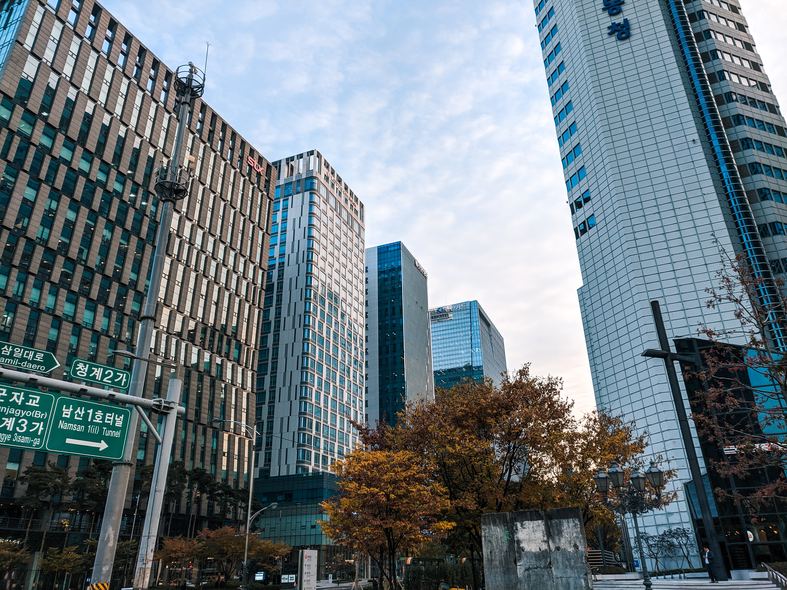

| 황시목 | 조승우 |
| 한여진 | 배두나 |
| 서동재 | 이준혁 |
| 우태하 | 최무성 |
| 강원철 | 박성근 |
| 최빛 | 전혜진 |
| 이연재 | 윤세아 |
| 신재용 | 이해영 |
| 장건 | 최재웅 |
| 박상무 | 정성일 |
| 오주선 | 김학선 |
| 최윤수 팀장 | 전배수 |
| 김병현 | 태인호 |

통영지청에서 임기를 마친 시목은 새 발령지로의 이동을 앞두고 있다.
하지만 그의 이동 직전, 짙은 안개가 낀 바닷가에서 예상치 못한 인명피해가 발생한다.
시목과 경찰 앞에 떠오른 두 구의 사체. 단순 처리될 것 같던 이 익사사고가 검찰과 경찰의 오랜 수사권 대립에 새로운 불씨로 번지게 되는데!